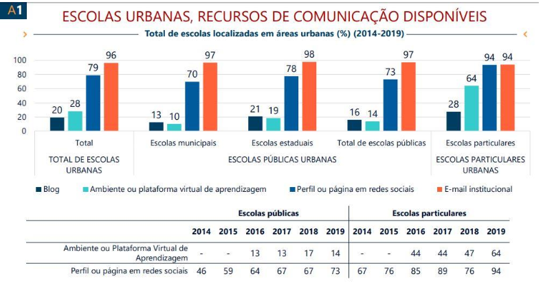

Projeções de mercado
• Escolas urbanas, recursos de comunicação disponíves

Ao observar os números destacados na imagem e sua localização nas
barras, percebe-se que o ambiente virtual, que desempenha um papel
fundamental no acesso às novas tecnologias e na aprendizagem de
robótica, apresenta uma grande deficiência nas escolas públicas em
comparação com as escolas privadas, iremos ajudar nessa necessidade
com programas gratuitos e acessíveis para todos.
• Comparação do interesse em robôs indústriais no mercado externo e
interno
Nossa startup se compromete em preencher a falta de mão de obra
qualificada na Indústria 4.0 no Brasil. Nosso objetivo é acelerar a
formação digital e melhorar a cognição e o raciocínio lógico da
população brasileira. Ao analisar os dados, percebe-se que o Brasil
está muito atrás dos países desenvolvidos, mesmo países que não são
conhecidos por sua indústria desenvolvida, como o México e a França,
estão mais de 4 vezes à frente do Brasil. A falta de iniciativas
tecnológicas na educação, faz com que a necessidade e a importância
não sejam compreendidas pelo governo, resultando em investimento
insuficiente no país, isso criou um ciclo de baixíssimo interesse
industrial e econômico no país.